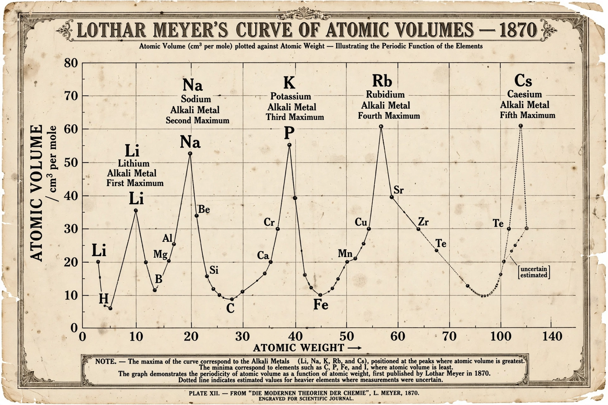

From Wikipedia, the free encyclopedia
Atomic volume (atomic weight/density) expresses the ratio of atomic mass to density; conceptually it is the volume occupied by one mole of an element at room temperature. It is measured in units of cm³/mol.

The atomic volume is calculated as the atomic mass divided by the density of the element in its standard state. For gases, it is usually referred to as the molar volume at standard temperature and pressure.
Relative atomic volumes and molecular volumes show a marked periodicity: atomic volume increases down a group as electron shells are added, decreases across a period to a minimum near the middle, and the alkali metals sit at the maxima of each period. Alkali metals such as lithium, sodium and potassium have notably large atomic volumes, while dense transition metals such as osmium and iridium have small ones.
Around 1870, Lothar Meyer plotted atomic volume against atomic weight, producing one of the classic graphical demonstrations of periodicity — his curve supported the periodic law developed independently with Dmitri Mendeleev's periodic table.
See also: Atomic radius, Periodic trends.